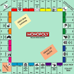
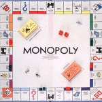

Un juego creado con la funcion de servir como herramienta para enseñar las teorias acerca de la justicia social y económica extraídas del estudio titulado progreso y miseria de henry George
Comercializado por vez primera en el año 1936. A lo largo de 80 años, el juego ha sufrido una notable evolución. Sus múltiples ediciones y sus tantas versiones ha dado pie a que se cambiara desde la caja que lo contiene hasta los elementos que lo componen. Logrando así, mantenerse como el favorito a tráves de las décadas
Con los años la finalidad del juego cambió para solo disfrutar un buen rato, negociando propiedades y hasta haciendo usos de medios electrónicos para todas las transacciones que requiere el juego
